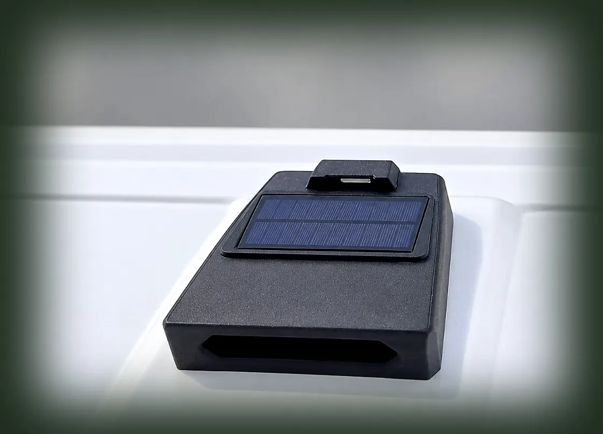
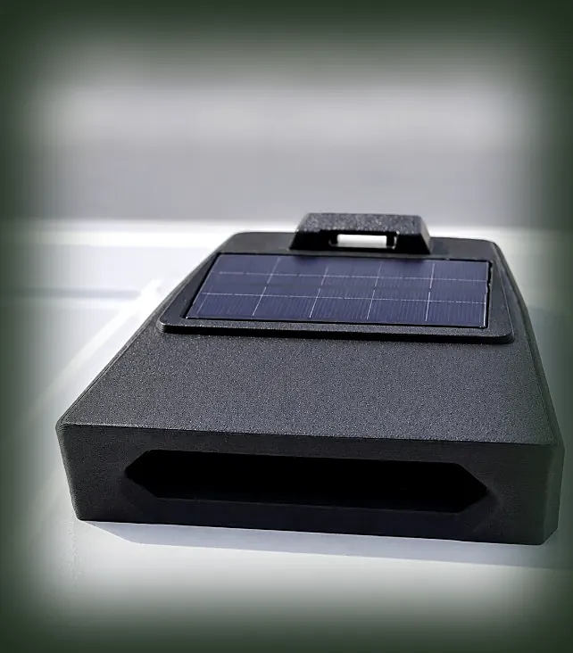
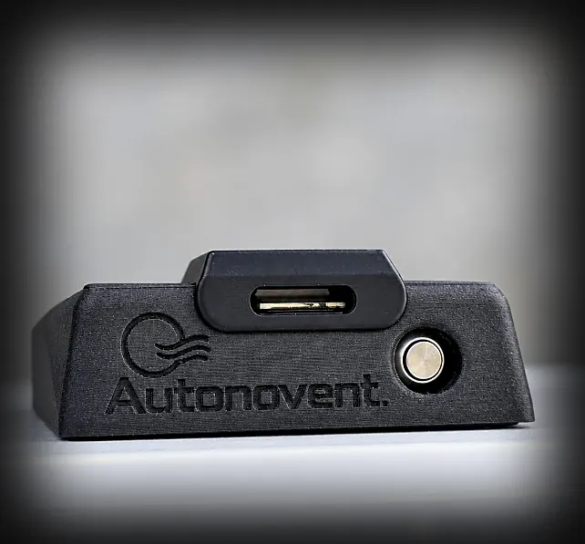

Leave the dust behind.
Autonovent
A compact, self-contained air vent for vehicle canopies. It mounts around the middle-front of the canopy roof and draws air outward to help create negative pressure, so less dust is pulled in on dusty roads.
The photograph is a lifestyle scene. This vehicle does not show the Autonovent installation.
The unit
These photographs show the Autonovent unit. The wide slot on the front is the air intake. The panel on top is the solar panel.



What Autonovent does
Autonovent is designed to help reduce dust entering a canopy when you drive on dusty roads. While you drive, the front vent opens so air can flow into the canopy and help create negative pressure.
It does not seal the canopy, create a vacuum, or make the load space dust-free.
Intended use
Autonovent is for 4x4 and overland travel with a vehicle canopy: gravel roads, farm tracks, and other dusty conditions where a following dust cloud can work its way inside.
The unit is relatively small, about the size of an A4 sheet, and is meant to sit around the middle-front of the canopy roof rather than dominate it.
Why it is fitted
-
Helps keep dust out
Designed to help reduce dust ingress. It is not a guarantee that no dust will enter.
-
Made for dusty roads
Intended for the conditions canopy owners meet on gravel and overland routes.
-
Compact and contained
A self-contained unit, about A4 size, mounted on the canopy roof.
-
Clearer arrivals
Less dust to deal with when you stop, so more of the trip can be spent on the journey.
How it works
While you drive, the front vent opens and air flows into the canopy. That airflow is designed to help create negative pressure and reduce dust in the load space. The vent closes when the vehicle stops, and when rain or moisture is detected. It does not make a canopy dust-free or waterproof.
Installation
Autonovent is designed to bolt onto the canopy, around the middle-front of the roof. A step-by-step guide, tool list, and vehicle fitment list have not been published yet.
Questions
Pricing, availability, and fitment for a particular vehicle are discussed through a quote. Published answers to the common questions are on the FAQ page.
Availability
Checking whether a product is listed for purchase.
Ready to leave the dust behind?
Interested in Autonovent? Get in touch to discuss pricing, availability and your vehicle setup.